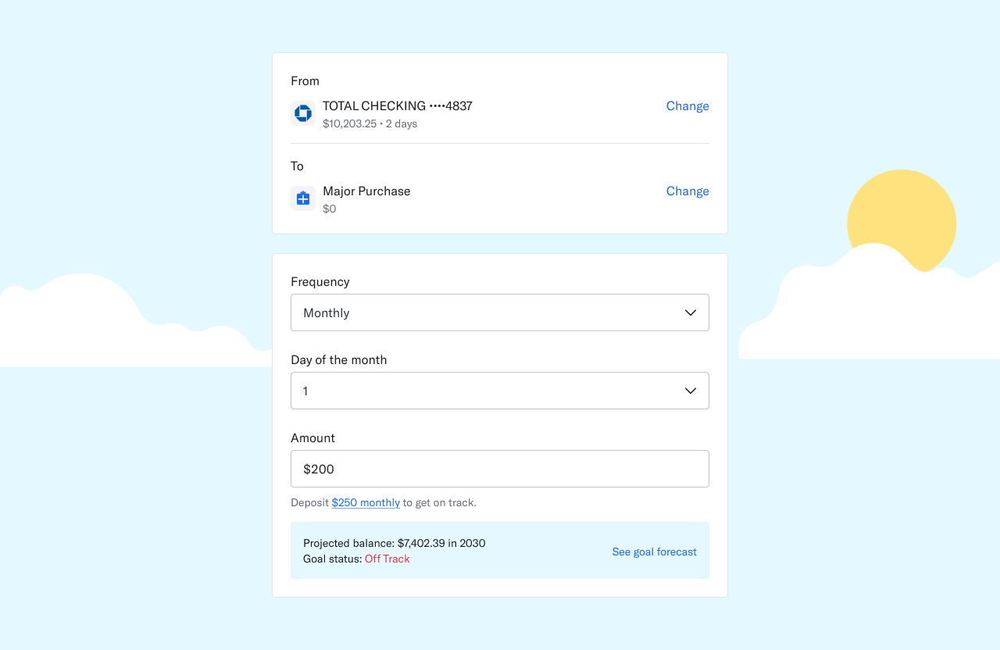
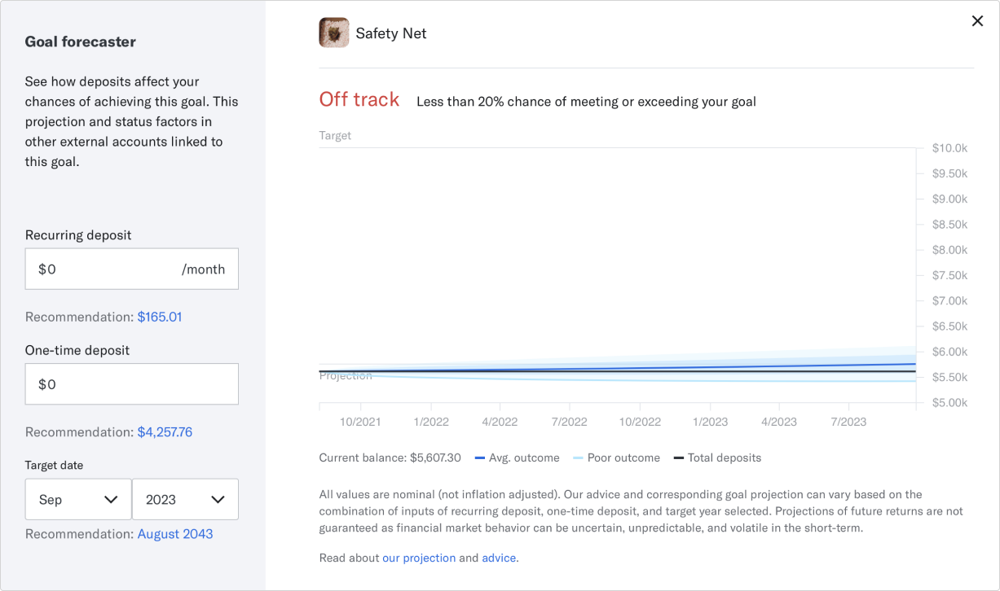
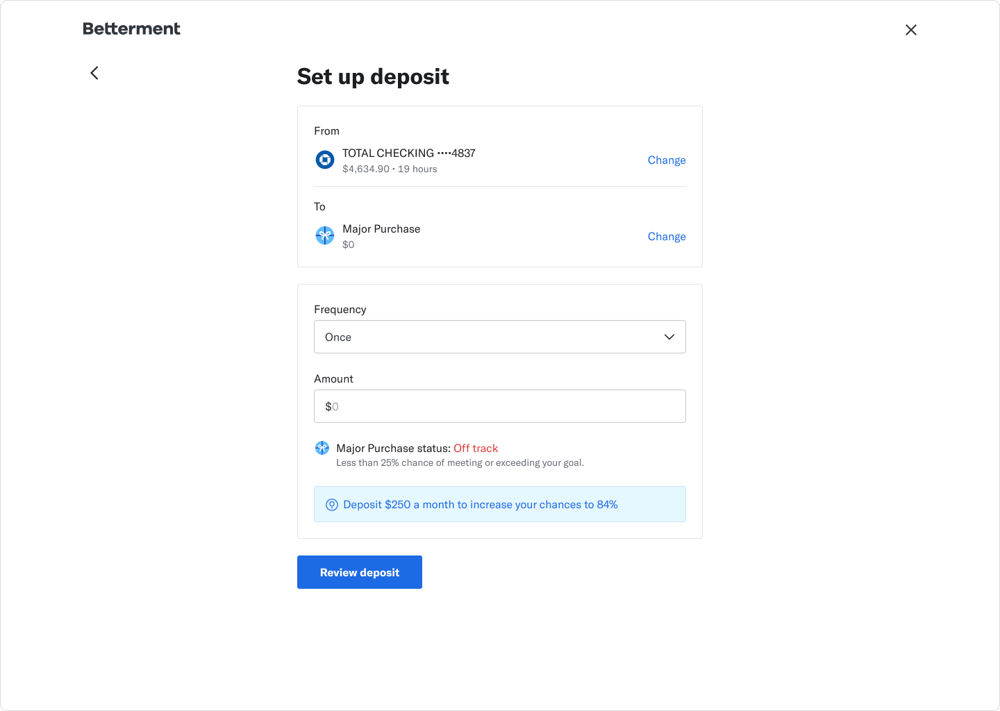
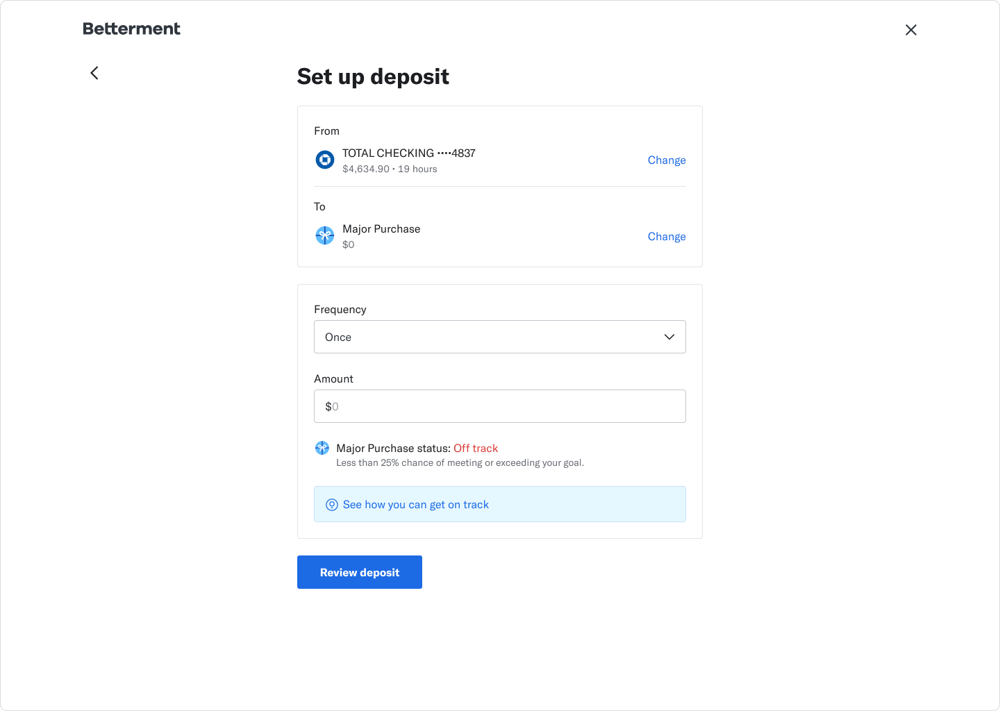
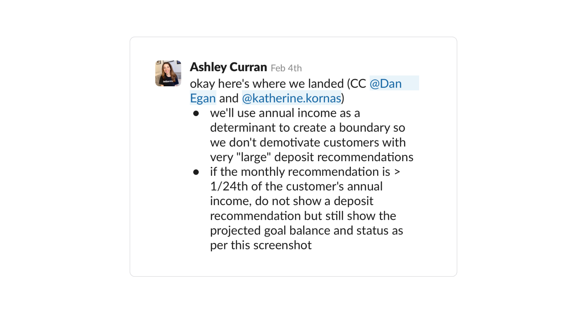
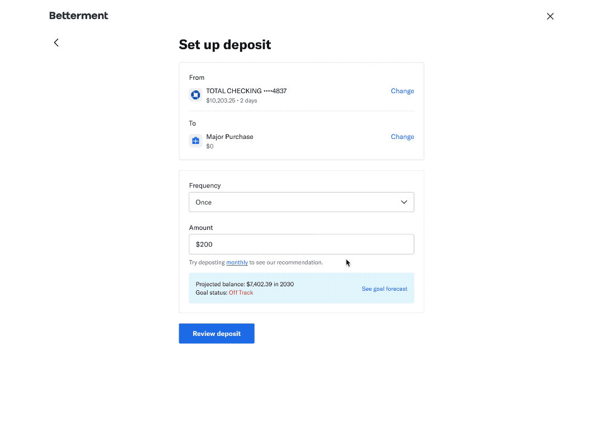

Deposit advice
Betterment, 2021
Betterment is a goal-based investing product. Customers can create goals with a target balance and target date.
With that information plus our portfolio projections, we’re able to suggest a deposit amount to our customers to reach their goals.
Essentially, we're able to give some deposit advice.
Background
So what is deposit advice? Here's a quick example! I want to save up for a new car so I create an investing goal.
- My goal is $40,000
- I want to buy my car in 2030
- Betterment says I need to save $300 a month
Betterment calculates how much I need to deposit each month to be on track through goal forecaster, a tool that
visualizes what your money could be in the future. You can see this tool in any of your accounts.
But, it would be even better if we can power our deposit flows to display it when you’re making your first deposit, or whenever you want to set up your auto-deposit.
Problem
Betterment has this amazing tool called goal forecaster that tells you how much to deposit each month to reach your goals.
Unfortunately, not many people use it.
We hoped to use the power of goal forecaster to help customers get closer to their goals in the most important moment: the deposit flow.
We hoped to use the power of goal forecaster to help customers get closer to their goals in the most important moment: the deposit flow.
Design
We actually already had a simpler version of this on mobile and learned that it didn’t have a significant impact on auto-deposits.
The plan was to bring web to parity with mobile while adding new features that could increase goal confidence and deposits.
There are a couple pieces of information we can display.
We don’t want to show everything, only what’s most impactful when making a deposit.
All the pieces live in goal forecaster:

Goal forecaster is a super powerful visualizer! Very underrated.
- Projected balance
This is the future. This is what your account balance could be if you deposited $100, $200, etc.
- Goal status
You're either on track or off track. This is decided by the projection graph.
- Goal projection graph
This projection graph visualizes how much impact you can make with a deposit or auto-deposit.
- Suggested deposit amount
This is the monthly amount we recommend to help you get on track.
- Goal confidence
This is a percentage that shows how likely you are to reach your goal.
Testing
I did a few user tests to understand comprehension.
The first one was to test comprehension of advice.
I learned that it was helpful! But it wasn’t clear where 84% (goal confidence) was coming from and how it was calculated.

Do users understand the advice?
I did another user test with a different design.
The goal of this one was to see if goal forecaster made sense in the deposit flow.
People expected the “See how to get on track” to give more advice, but goal forecaster was confusing because it comes up blank for a $0 balance goal.

Do users understand goal forecaster in this context?
So, the good news was that people appreciated the suggested deposit amount.
That was exceptional.
(Quote from a user tester)
And the projected balance was exciting and motivating to see.
We still needed work on parsing goal forecaster in smaller, digestible chunks and clearing up goal confidence.
Iteration
In addition to the feedback above, I kept feeling that the advice could be demotivating if you were off track and we suggested a potentially large deposit amount.
Especially when you just decided to deposit money.
Here are 2 things we did to help this:
- Live updates
We update the projected balance and goal status as the customer inputs a deposit amount.
This allows the customer to see the impact immediately and get excited!

Off track to on track with a single click?!
- Income boundary
Based on the simplest math, our suggested deposit amount can be really large.
The worst thing is suggesting a large deposit amount that is completely out of your budget.
To resolve this, we factored in income to make sure we don’t show a demotivating number.

The deciding message from my PM.
Final experience

final-final-4.png
Learnings & reflection
We launched to a small percentage of our users to see the impact. It was paused after a few weeks as we figured out how to better track it.
I spent most of my time trying to balance the reality of an off track goal and the tricky emotions that come with money.
I wanted customers to be motivated to reach their goal, not demotivate them with an unrealistic number.
But that number varies per person. I think we reached a spot where it was a step closer to financial personalization.
If I were to continue this project, I would spend more time figuring out ways to give customized advice; maybe we can learn
more about the goal.
I spent most of my time trying to balance the reality of an off track goal and the tricky emotions that come with money.
I wanted customers to be motivated to reach their goal, not demotivate them with an unrealistic number.